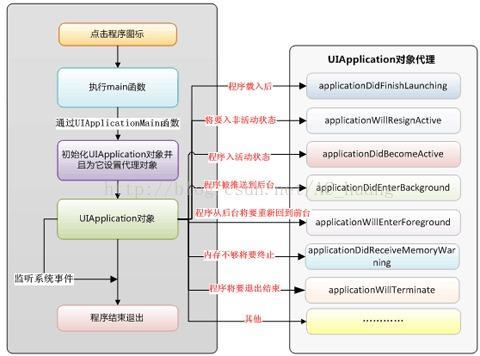

iOS程序的启动执行顺序 AppDelegate 及 UIViewController 的生命周期
张茨一飞 : JUN 27, 2017iOS应用程序的状态切换很重要，而UIViewControler对于iOS这种MVC模式来说尤为重要，基本都要继承自他。
一、iOS程序的启动执行顺序
1 程序的入口
进入main函数, 设置AppDelegate称为函数的代理
2 程序完成加载
-[AppDelegate application:didFinishLaunchingWithOptions:]
3 创建window窗口
4 程序被激活
-[AppDelegate applicationDidBecomeActive:]
5 当点击command+H时
程序取消激活状态
-[AppDelegate applicationWillResignActive:]
程序进入后台
-[AppDelegate applicationDidEnterBackground:]
6 点击进入工程
程序进入前台
-[AppDelegate applicationWillEnterForeground:]
程序被激活
-[AppDelegate applicationDidBecomeActive:]
1、对于applicationWillResignActive(非活动)与applicationDidEnterBackground(后台)这两个的区别。
（1）applicationWillResignActive(非活动)：
比如当有电话进来或短信进来，在或者锁屏等，这时你的应用程序挂起进入非活动状态，也就是你的手机其实界面还是显示着你当前的App窗口，只不过被别的任务强制占用了，或者后台状态(因为要先进入非活动状态，然后进入后台)。
（2）applicationDidEnterBackground(后台)：
指当前窗口不是你的App，大多数程序进入这个后台后会在在这个状态上停留一会，时间到之后会进入挂起状态(Suspended)。如果你程序特殊处理后可以长期处于后台状态即在后台状态也可以运行。Suspended（挂起）:程序在后台不能执行代码。系统会自动把程序变成这个状态而且不会发出通知。当挂起时，程序还是停留在内存中的，当系统内存低时，系统就把挂起的程序清除掉，为前台程序提供更多的内存。
看下面流程图：
这个图特别重要，说明了所有的切换状态。

入口函数:
int main(int argc, char * argv[]) { @autoreleasepool {
return UIApplicationMain(argc, argv, nil, NSStringFromClass([XYZAppDelegate class]));
} }
2.UIApplicationMain 函数解释：
官方解释
// If nil is specified for principalClassName, the value for NSPrincipalClass from the Info.plist is used. If there is no // NSPrincipalClass key specified, the UIApplication class is used. The delegate class will be instantiated using init. UIKIT_EXTERN int UIApplicationMain(int argc, char *argv[], NSString *principalClassName, NSString *delegateClassName);
翻译过来之后（参数的解释）
1.argc和argv参数是为了与C语言保持一致，在这没用到，不详述。
2.后面两个参数为principalClassName(主要类名)和delegateClassName(委托类名)。
(1)如果principalClassName是nil，那么它的值将从Info.plist中获取，如果Info.plist中没有，则默认为UIApplication。principalClass这个类除了管理整个程序的生命周期之外什么都不做，它只负责监听事件然后交给delegateClass去做。
(2)delegateClass将在工程新建时实例化一个对象。NSStringFromClass([AppDelegate class]) //相当于@"AppDelegate"
3.AppDelegate类实现文件
- (BOOL)application:(UIApplication *)application didFinishLaunchingWithOptions:(NSDictionary *)launchOption{
NSLog(@"didFinishLaunchingWithOptions");
return YES;
}
- (void)applicationWillResignActive:(UIApplication *)application {
// 当应用程序从活动状态(active)变到非活动状态(inactive时被触发调用， 这可能发生在一些临时中断下(例如：来电话、来短信)又或者程序退出时，他会先过渡到后台然后terminate 使用这方法去暂停正在进行的任务，禁用计时器，节流OpenGL ES 帧率。在游戏中应该在这个方法里面暂停游戏。
NSLog(@"WillResignActive");
}
- (void)applicationDidEnterBackground:(UIApplication *)application {
// 使用这种方法来释放共享资源,保存用户数据,无效计时器,存储足够多的应用程序状态信息来恢复您的应用程序的当前状态,以防它终止丢失数据。 如果你的程序支持后台运行，那么当用户退出时不会调用applicationWillTerminate。
NSLog(@"DidEnterBackground");
}
- (void)applicationWillEnterForeground:(UIApplication *)application {
//先从后台切换到非活动状态，然后进入活动状态。
NSLog(@"WillEnterForeground");
}
- ()applicationDidBecomeActive:(UIApplication *)application {
//重启所有的任务，不管是从非活动状态还是刚启动程序，还是后台状态。
NSLog(@"DidBecomeActive");
}
- (void)applicationWillTerminate:(UIApplication *)application {
//终止，game over
NSLog(@"WillTerminate");
}
下面给出打印就明白他们之间的交互先后顺序了：
启动程序
didFinishLaunchingWithOptions
DidBecomeActive
按下Home键
WillResignActive
DidEnterBackground
重新点击程序
WillEnterForeground
DidBecomeActive
分析：
1.application:didFinishLaunchingWithOptions:
程序首次已经完成启动时执行，若直接启动，launchOptions中没有数据；否则，launchOptions将包含对应方式的内容（比如从微信中启动节奏大师--）。
2.applicationWillResignActive（非活动）
程序将要失去Active状态时调用，比如按下Home键或有电话信息进来。之后程序将进入后台状态。对应的applicationWillEnterForeground这个方法用来
a、暂停正在执行的任务；
b、禁止计时器；
c、减少OpenGL ES帧率；
d、若为游戏应暂停游戏；
3.applicationDidEnterBackground（已经进入后台）
程序已经进入后台时调用，对应applicationDidBecomeActive（已经变成前台），这个方法用来
a、释放共享资源；
b、保存用户数据（写到硬盘）；
c、作废计时器；
d、保存足够的程序状态以便下次恢复；
4.applicationWillEnterForeground（将进入前台）
程序即将进去前台时调用，对应applicationWillResignActive（将进入后台）。这个方法用来
1.撤销applicationWillResignActive中做的改变。
5.applicationDidBecomeActive（已经进入前台）
程序已经变为Active（前台）时调用。对应applicationDidEnterBackground（已经进入后台）。
1.若程序之前在后台，在此方法内刷新用户界面。
6.applicationWillTerminate
程序即将退出时调用。记得保存数据，如applicationDidEnterBackground方法一样。
其实仔细看上面那个状态图和输出打印，他说明了所有这些切换交互流程。
二、UIViewController的生命周期
//这个UIViewController的指定初始化方法(其他的初始化方法最终要调用这个初始化方法);//如果连接了串联图storyBoard根本就不用管这货
- (id)initWithNibName:(NSString *)nibNameOrNil bundle:(NSBundle *)nibBundleOrNil {
NSLog(@"%s", __FUNCTION__);
self = [super initWithNibName:nibNameOrNil bundle:nibBundleOrNil];
if (self) {
}
return self;
}
//视图控制器中的视图加载完成，viewController自带的view加载完成
- (void)viewDidLoad {
NSLog(@"%s", __FUNCTION__);
[super viewDidLoad];
}
//出现内存警告
//模拟内存警告:点击模拟器->hardware-> Simulate Memory Warning
- (void)didReceiveMemoryWarning {
NSLog(@"%s", __FUNCTION__);
[super didReceiveMemoryWarning];
}
//视图将要出现
- (void)viewWillAppear:(BOOL)animated {
NSLog(@"%s", __FUNCTION__);
[super viewWillAppear:animated];
}
//视图已经出现
- (void)viewDidAppear:(BOOL)animated {
NSLog(@"%s", __FUNCTION__);
[super viewDidAppear:animated];
}
//视图将要消失
//双击Home键,向上推出程序执行该函数
- (void)viewWillDisappear:(BOOL)animated {
NSLog(@"%s", __FUNCTION__);
[super viewWillDisappear:animated];
}
//视图已经消失
- (void)viewDidDisappear:(BOOL)animated {
NSLog(@"%s", __FUNCTION__);
[super viewDidDisappear:animated];
}
看打印输出：
-[RootViewController initWithNibName:bundle:]
-[RootViewController viewDidLoad]
-[RootViewController viewWillAppear:]
-[RootViewController viewDidAppear:]
Received memory warning.
-[RootViewController didReceiveMemoryWarning]
-[RootViewController viewWillDisappear:]
-[RootViewController viewDidDisappear:]
当一个视图控制器被创建，并在屏幕上显示的时候。 代码的执行顺序
1、alloc 创建对象，分配空间;
2、init (initWithNibName) 初始化对象，初始化数据;
3、loadView 从nib载入视图 ，通常这一步不需要去干涉。除非你没有使用xib文件创建视图;
4、viewDidLoad 载入完成，可以进行自定义数据以及动态创建其他控件;
5、viewWillAppear 视图将出现在屏幕之前，马上这个视图就会被展现在屏幕上了;
6、viewDidAppear
视图已在屏幕上渲染完成 当一个视图被移除屏幕并且销毁的时候的执行顺序，这个顺序差不多和上面的相反;
1、viewWillDisappear
视图将被从屏幕上移除之前执行
2、viewDidDisappear
视图已经被从屏幕上移除，用户看不到这个视图了
3、dealloc
视图被销毁，此处需要对你在init和viewDidLoad中创建的对象进行释放 关于viewDidUnload ：在发生内存警告的时候如果本视图不是当前屏幕上正在显示的视图的话，viewDidUnload将会被执行，本视图的所有子视图将被销毁，以释放内存,此时开发者需要手动对viewLoad、viewDidLoad中创建 的对象释放内存。因为当这个视图再次显示在屏幕上的时候，viewLoad、viewDidLoad 再次被调用，以便再次构造视图。 当我们创建一个UIViewController类的对象时，通常系统会生成几个默认的方法，这些方法大多与视图的调用有关，但是在视图调用时，这些方法的调用顺序如何，需要整理下。
通常上述方法包括如下几种，这些方法都是UIViewController类的方法：
- (void)viewDidLoad；
- (void)viewDidUnload；
- (void)viewWillAppear:(BOOL)animated；
- (void)viewDidAppear:(BOOL)animated；
- (void)viewWillDisappear:(BOOL)animated；
- (void)viewDidDisappear:(BOOL)animated；
下面介绍下APP在运行时的调用顺序。
1）- (void)viewDidLoad；
一个APP在载入时会先通过调用loadView方法或者载入IB中创建的初始界面的方法，将视图载入到内存中。然后会调用viewDidLoad方法来进行进一步的设置。通常，我们对于各种初始数据的载入，初始设定等很多内容，都会在这个方法中实现，所以这个方法是一个很常用，很重要的方法。但是要注意，这个方法只会在APP刚开始加载的时候调用一次，以后都不会再调用它了，所以只能用来做初始设置。
2) - (void)viewDidUnload;
在内存足够的情况下，软件的视图通常会一直保存在内存中，但是如果内存不够，一些没有正在显示的viewcontroller就会收到内存不够的警告，然 后就会释放自己拥有的视图，以达到释放内存的目的。但是系统只会释放内存，并不会释放对象的所有权，所以通常我们需要在这里将不需要在内存中保留的对象释 放所有权，也就是将其指针置为nil。 这个方法通常并不会在视图变换的时候被调用，而只会在系统退出或者收到内存警告的时候才会被调用。但是由于我们需要保证在收到内存警告的时候能够对其作出反应，所以这个方法通常我们都需要去实现。另外，即使在设备上按了Home键之后，系统也不一定会调用这个方法，因为IOS4之后，系统允许将APP在后台挂起，并将其继续滞留在内存中，因此，viewcontroller并不会调用这个方法来清除内存。
3）- (void)viewWillAppear:(BOOL)animated;
系统在载入所有数据后，将会在屏幕上显示视图，这时会先调用这个方法。通常我们会利用这个方法，对即将显示的视图做进一步的设置。例如，我们可以利用这个方法来设置设备不同方向时该如何显示。 另外一方面，当APP有多个视图时，在视图间切换时，并不会再次载入viewDidLoad方法，所以如果在调入视图时，需要对数据做更新，就只能在这个方法内实现了。所以这个方法也非常常用。
4) - (void)viewDidAppear:(BOOL)animated；
有时候，由于一些特殊的原因，我们不能在viewWillApper方法里，对视图进行更新。那么可以重写这个方法，在这里对正在显示的视图进行进一步的设置。
5) - (void)viewWillDisappear:(BOOL)animated；
在视图变换时，当前视图在即将被移除、或者被覆盖时，会调用这个方法进行一些善后的处理和设置。由于在IOS4之后，系统允许将APP在后台挂起，所以在按了Home键之后，系统并不会调用这个方法，因为就这个APP本身而言，APP显示的view，仍是挂起时候的view，所以并不会调用这个方法。
6) - (void)viewDidDisappear:(BOOL)animated；
我们可以重写这个方法，对已经消失，或者被覆盖，或者已经隐藏了的视图做一些其他操作。 上述方法的流程图可以简单用如下表示：